- fish of the day 13.09.2026
- Nematistius pectoralis, Roosterfish
-
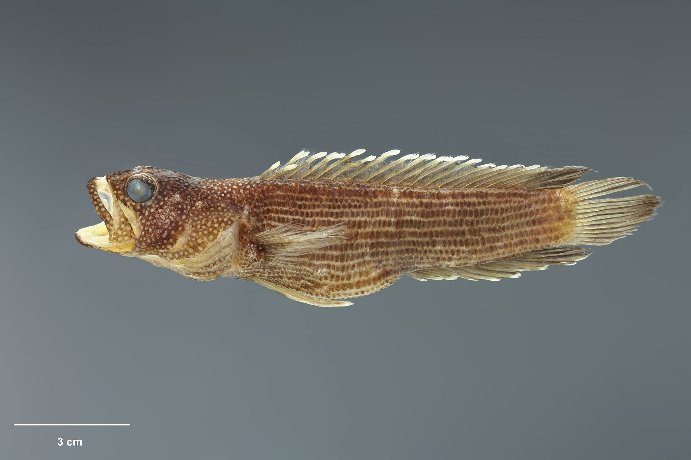
- fish of the day 12.09.2026
- Springerichthys bapturus, Japanese blacktail triplefin
-
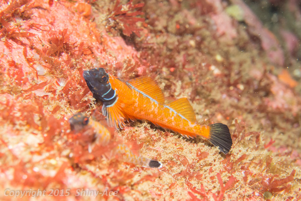
- fish of the day 11.09.2026
- Pempheris affinis, black-tipped bullseye
-
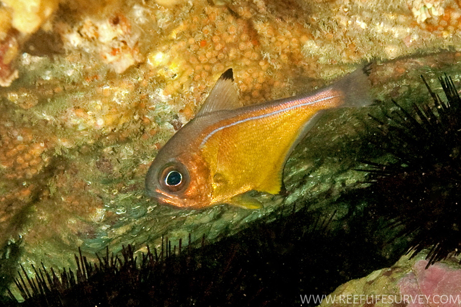
- fish of the day 10.09.2026
- Chirocentrus dorab, dorab wolf-herring
-
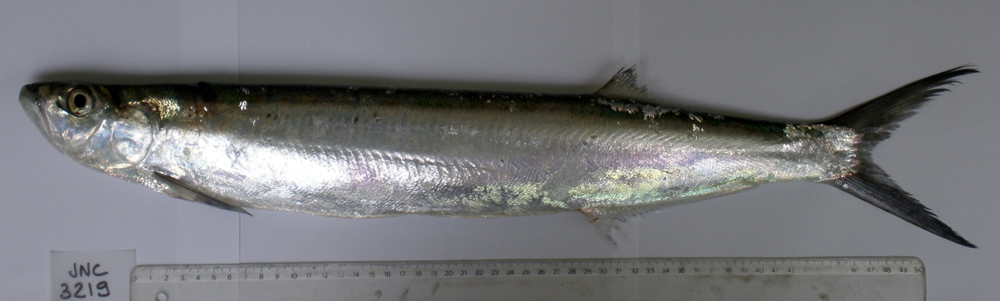
- fish of the day 09.09.2026
- Gollum attenuatus, gollumshark
-
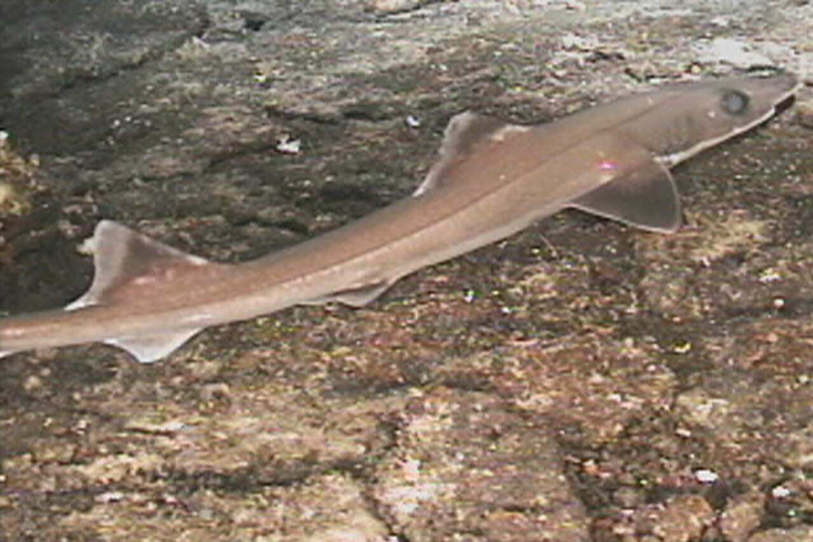
- fish of the day 08.09.2026
- Ceratias holboelli, deep-sea angler
-
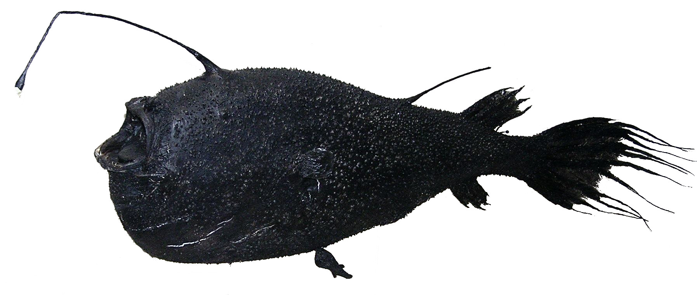
- fish of the day 07.09.2026
- Percopsis omiscomaycus, trout-perch
-
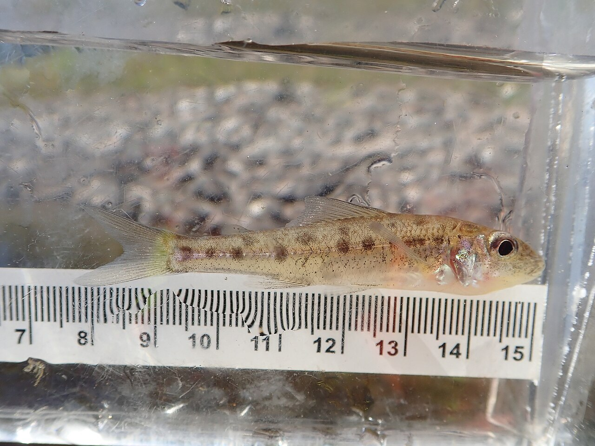
- fish of the day 06.09.2026
- Barbodes semifasciolatus, Golden barb
-
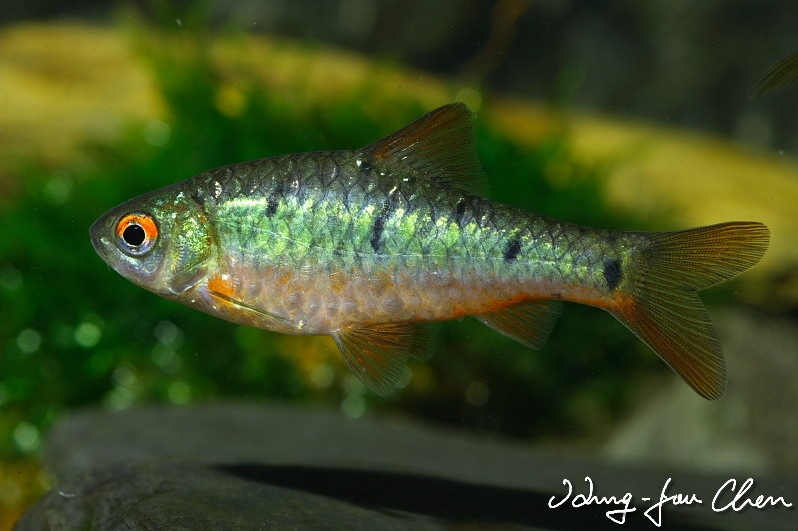
- fish of the day 05.09.2026
- Lepomis humilis, Orangespotted Sunfish
-
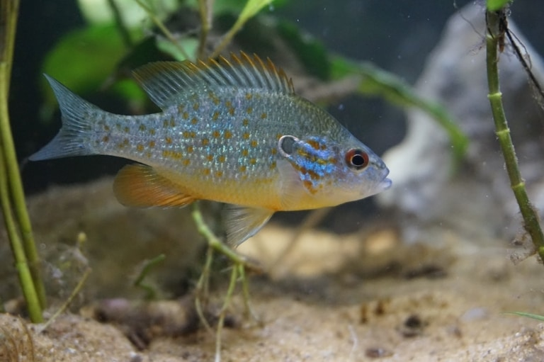
- fish of the day 04.09.2026
- Emblemariopsis pricei, Seafan blenny
-
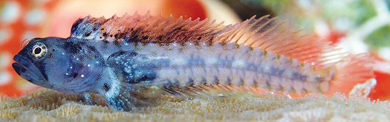
- fish of the day 03.09.2026
- Aldrovandia oleosa
-
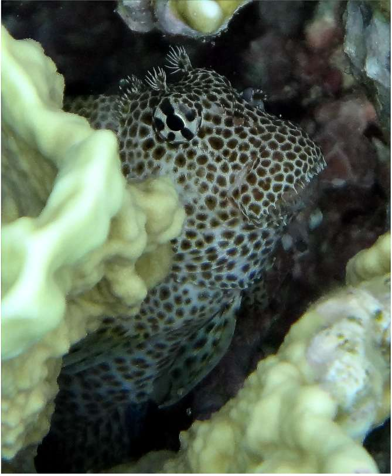
- fish of the day 02.09.2026
- Chrysiptera starcki, Starck's demoiselle
-
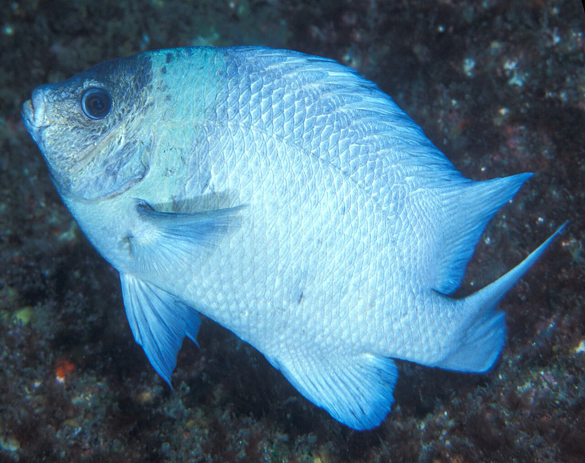
- fish of the day 01.09.2026
- Ariomma regulus
-
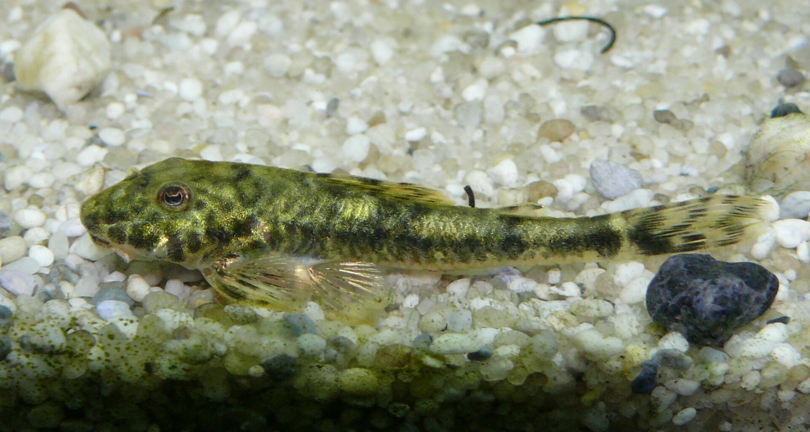
fish of the year

fish of the July results